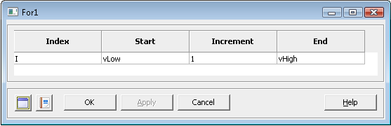

For — Perform a for loop
The for loop is a control flow statement that allows portions of code to be executed iteratively using an explicit loop variable (Wikipedia). GMAT for loops are three-expression loops that allow the user to set the initial value of the loop variable, its increment, and the test to exit the loop. A parameter must be defined explicitly using a Create Variable statement or GUI equivalent before it can be used in a for loop command statement. The parameters used to define Start, Increment, and End can be any of the following GMAT parameters: numeric literal (real number), variable, array element, object property.
The GUI for the For Loop command is divided into four sections.
The first section, the index, is where the counter variable name is displayed.
The second section, the start, is the number with which the counter variable is first stored with.
The third section, the increment, is the value that the counter variable will change by each time the program goes through the loop.
The fourth section, the end, is the value of the counter variable when the loop is exited.
|  |
Figure: Default Name and Settings for the For Loop command Dialog Box
Variable | The Variable field allows the user to define the variable that to be incremented during the loop process.
| ||||||
Start | The Start option allows the user to set the starting value of the For Loop.
| ||||||
Increment | The Increment option allows the user to set the increment value of the For Loop. When the increment value is not included in a for loop statement, the default value is used.
| ||||||
End | The End option allows the user to set the ending value of the For Loop.
|
When the Increment option is left out of the script syntax the default value is used. If an Increment value of 0 is used, the For Loop should not execute but GMAT should continue to run. If End>Start and Increment<0, then the For Loop should not execute. If Start>End and Increment>0, then the For Loop should not execute. End can be equal to Start, but the For Loop will not execute.